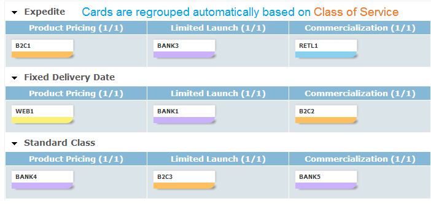
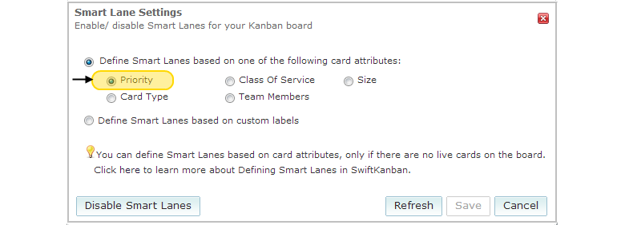
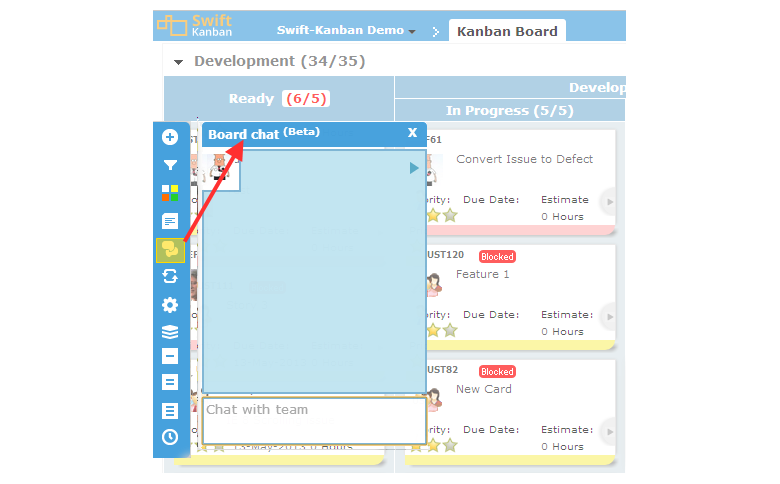
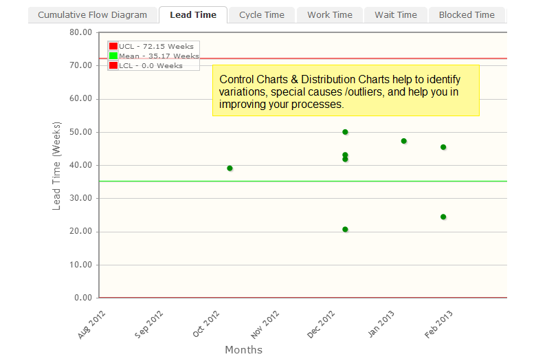
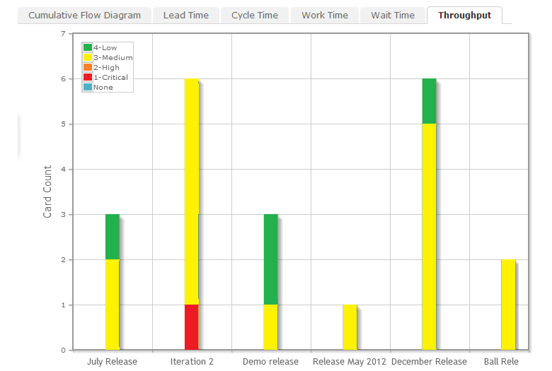
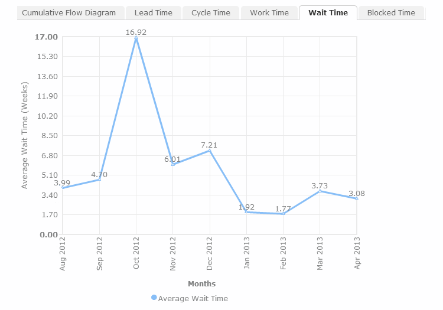

SwiftKanban Features
Visualize Your Workflow
Visualize Your Workflow using SwiftKanban and quickly define your processes as lanes and
sub-lanes
on a Kanban board, representing a workflow stage through which you can flow your work.

Define Custom Work Cards and Card Templates
Define Work Cards of various types e.g. User Stories, Defects and Issues using a rich text
editor, configurable template to define your backlog, which can feed work into the Kanban board.
You can also set default TODO list for cards which can act as DOD (Definition of Done) or a generic checklist.

Smart Lanes
Smart-Lanes add tremendous flexibility and visualization to the Kanban board. 'Smart Lanes' can be associated with various card attributes such as Class Of Service, or Team Members, or even your own ad-hoc labels. As you move cards from one Smart Lane to another, the associated attribute value is also reset accordingly and vice-versa!



Quick Actions on Card

The following quick actions are available directly on the card.
- Archive Card – Archive user story card from any lane to mark it done or if the user story has become obsolete.
- Clone Card – Clone card to create an exact replica of existing card to start a new user story with current settings of the card. E.g. A team is working on an issue for London factory and a similar issue is discovered for Tokyo factory.
- Convert Card – Convert a defect/bug into a user story or change request without losing details of existing card. Convert card can be used to convert any card type to other card type. This helps when the work type changes for a user story.
- Move To (Backlog) – Skip lanes and move the user story card to Backlog or any other lane on the board.
- Linked Cards – This will allow you to trace several cards for future reference
Get different level of details using board zoom!


Teams β
SwiftKanban allows grouping members in 'Teams' and filtering the Kanban board/reports by Teams to track the progress of various cards assigned to a specific teams and enable focused collaboration.


Collaboration
SwiftKanban encourages communication amongst the team and provides capability for threaded
discussions, instant chat with card owners and group discussion with team of entire board.


Analytics and Reports
Track key performance metrics such as Lead Time, Cycle Time and Wait Times in SwiftKanban and
identify improvement opportunities using Cumulative Flow diagrams, which are generated based on
the work item count, as well as work item estimates, to indicate the progress of work being
executed/ flowing through the board over a period of time.





ScrumBan>
Scrum Release Planning
Release Planning view in SwiftKanban enables team to plan release scope in a easy-to-use drag-drop
interface, as well as, track the release progress using various visual indicators and charts available in the same view.

User Story Hierarchy
User Story Hierarchy is useful in situations where a larger (or parent) user story needs to be broken down into several smaller (or child) user stories for better planning and execution. Defining relationships is through a highly visual interface that enables creation of child stories as well as linking existing stories to parent user stories.
Scrum Analytics Select Scrum Analytics for your team: Burn-down Chart Throughput or Velocity
Older cards tend to fade
See where the action is! The new ‘Aging’ icon on the board menu enables you to see which cards have and have not been updated recently. The ‘older’ the card updates, the more faded it will appear!
Personalization


Portfolio Kanban
Kanban for Portfolio Management
Whether it is IT or Business in a corporation, a consulting company, a hi-tech product company, a legal firm, a marketing/ advertising agency, an HR department or any other type of organization, it has the need to manage portfolios. Portfolios are nothing but related groups of initiatives or activities or projects that need to be monitored together for an overall picture of how that group is performing as a whole.

So, you might want to manage projects, customers, lines-of-business, territory-based campaigns, recruitment campaigns as portfolios, make decisions and take appropriate actions to ensure the overall “health” of the portfolio. While traditional (Project) Portfolio Management tools abound, Kanban has the promise of being one of the easiest, most visual portfolio management tools. Portfolio Kanban is the application of Kanban to Portfolio Management.
Kanban's Value to Portfolio Management
Kanban's Value to Portfolio Management
- Swim-Lanes to depict one or more portfolios
- Visual Value Stream
- WIP Limits
- Rollup of Information
SwiftSync
The Most Enterprise-Ready Integration Technology!
SwiftSync is an integration bus platform that provides integrations for application and software
development organizations that want to improve their development efficiency, increase organizational
visibility, manage regulatory compliance, improve time-to-market, and more. SwiftSync powered by OpsHub
supports over 30 enterprise-class integrations - with the leading ALM tools, including those from HP, Microsoft, IBM, Accept,
Atlassian, Rally, Serena, and more.
SwiftSync has been architected, designed and built to enable multi-directional synchronization across your existing development environment, delivering seamless collaboration to your product development organization. Besides that, it will provide full transaction history, audit trailing and recovery capability in case of any sync failures. Use SwiftSync to visualize work across the organization!
SwiftSync has been architected, designed and built to enable multi-directional synchronization across your existing development environment, delivering seamless collaboration to your product development organization. Besides that, it will provide full transaction history, audit trailing and recovery capability in case of any sync failures. Use SwiftSync to visualize work across the organization!